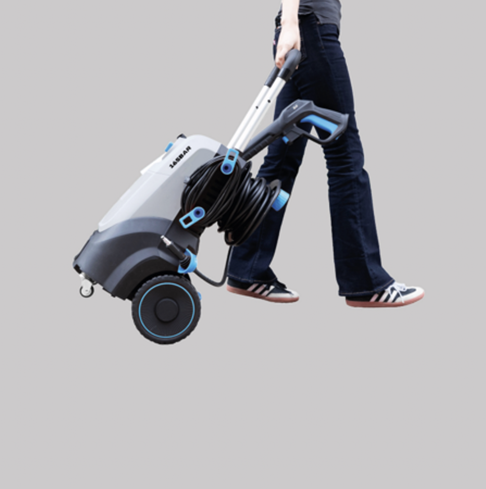

<!--
ACCESSIBLE IMAGE + TEXT BLOCK COMPONENT
---------------------------------------
ONLY EDIT VALUES IN THE TOKEN SECTION.
DO NOT EDIT STRUCTURE BELOW.
-->

<div
        style="
    /* ===== EDITABLE TOKENS ===== */
    --component-width: 20%;
    --image-src: url('images/image1.png');
    --overlay-height: 22%;

    /* ===== STRUCTURE (DO NOT EDIT) ===== */
    position: relative;
    width: var(--component-width);
    font-family: Arial, sans-serif;
    overflow: hidden;
    container-type: inline-size;
    box-sizing: border-box;
"
>

    <!-- ===== IMAGE (EDIT SRC + ALT ONLY) ===== -->
    

    <!-- ===== FIXED ACCESSIBLE OVERLAY ===== -->
    <div
            style="
            position: absolute;
            bottom: 0;
            left: 0;
            width: 100%;
            height: var(--overlay-height);
            background-color: #333333; /* LOCKED */
            display: flex;
            align-items: center;
            overflow: hidden;
            box-sizing: border-box;
        "
    >
        <p
                style="
                color: #FFFFFF; /* LOCKED */
                font-size: 5cqw;
                margin: 0;
                padding: 0 5%;
                text-align: left;
                line-height: 1.15;
                display: -webkit-box;
                -webkit-line-clamp: 3;
                -webkit-box-orient: vertical;
                overflow: hidden;
            "
        >
            2 large rear wheels and 2 smaller front wheels for easier manoeuvrability
        </p>
    </div>

</div>